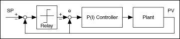
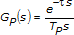

and time constant TP, which are two parameters in the integral-plus-deadtime model.
and time constant TP, which are two parameters in the integral-plus-deadtime model.The PID Relay autotuning technique, which is used by the Autotuning Wizard and the PID Relay instance of the PID Online Autotuning VI, uses the setpoint relay experiment to determining the information needed to tune the controller.
The following image illustrates the autotuning procedure excited by the setpoint relay experiment, which connects a relay and an extra feedback signal with the setpoint. The setpoint relay steps the setpoint up or down, exciting the autotuning procedure and allowing the controller to respond to the change and tune the system for an acceptable response. The PID Autotuning VI and the PID Relay instance of the PID Online Autotuning polymorphic VI directly implement this process. The existing controller remains in the loop.

For most systems, the nonlinear relay characteristic generates a limiting cycle, from which the autotuning algorithm identifies the relevant information needed for PID tuning. If the existing controller is proportional only, the autotuning algorithm identifies the ultimate gain Ku and ultimate period Tu. If the existing model is PI or PID, the autotuning algorithm identifies the dead time and time constant TP, which are two parameters in the integral-plus-deadtime model.
